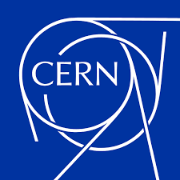

Os visionários por trás da rede mundial
| Home | O Primeiro Site e Navegador | Pessoas e Empresas | Sobre |
|
Sir Tim Berners-Lee, o criador da Web |
Pessoas FundamentaisVárias mentes brilhantes colaboraram para o que hoje conhecemos como Internet:
|
| Instituição / Empresa | Contribuição Principal | Época |
|---|---|---|
| DARPA / ARPA | Criação da ARPANET, precursora da Internet. | Década de 60 |
| CERN | Local de nascimento do HTML e da World Wide Web. | Anos 90 |
| NCSA | Desenvolvimento do navegador Mosaic. | 1993 |
| Microsoft | Popularização com o Internet Explorer e Windows. | Anos 90/2000 |
| Netscape | Dominou o mercado de navegadores no início da Web. | 1994 |
O Papel do CERNA Organização Europeia para a Pesquisa Nuclear (CERN) foi o ambiente ideal para a criação da Web. Cientistas do mundo todo precisavam de uma maneira de compartilhar dados de seus aceleradores de partículas. Foi ali que Berners-Lee implementou o primeiro servidor HTTP e o navegador inicial. |
 Logotipo do CERN em Genebra |